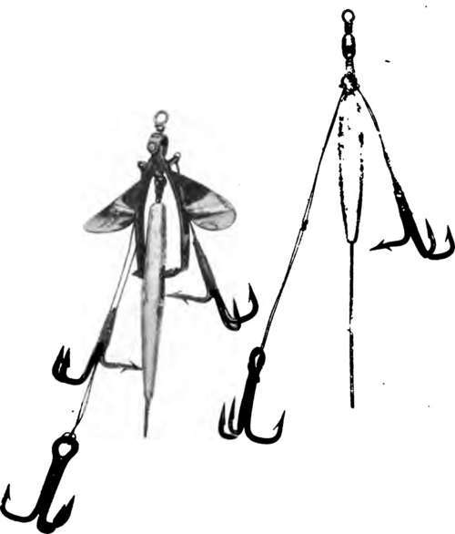
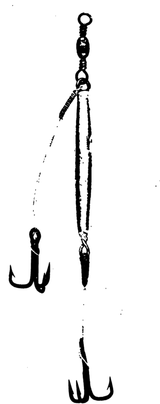
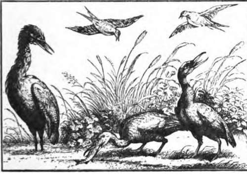

Fishing-Rods And Tackle For Mahseer. Continued
Description
This section is from the book "Fishing", by Horace G. Hutchinson. Also available from Amazon: Fishing.
Fishing-Rods And Tackle For Mahseer. Continued
Gut, undoubtedly, is our oldest friend and a true one. For light spoon traces as well as for fly it should be used, and must not be left out of the tackle list, as it always comes in useful. It should, however, be well cared for in India, and when not in use kept in a chamois skin pocket for protection.
The most popular form of artificial bait is undoubtedly the spoon. These are of three shapes. There is the ordinary dessert spoon shape, the kidney spoon (which is an elongated edition of the former), and the hog-backed spoon. In the case of the two former, the hooks are mounted on solid rings fixed to the spoon, one at the head and the other at the tail, while in the hog-backed or fluttering spoon the mounts are separate, the two hooks being on one strand placed on the inside of the spoon. Some prefer them of the one shape and some of the other, and it seems a matter of indifference which is employed, so long as they spin well and truly, and are thoroughly well made. This is a point which should be carefully seen to. No split rings of any kind should be employed in their manufacture. The attachment of the hooks to the (spoons should be made either with solid hard soldered rings or with copper wire passed through the eyes a good many times and made perfectly secure by soldering. For large mahseer, spoons are employed in lengths from 2 to 4 inches, and for the smaller mahseer from 2 inches downwards to about three-quarters of an inch.
As we have said there seems little in the choice of shape, and more may be said on the question as to whether fixed or flying triangles are best. For the kidney and ordinary spoons, size 2 to 3½ inches, the fixed triangles are, we think, the safest; but for smaller fish the hog-backed with its flying triangles is very good. The most favourite colour is silver in the inside and copper or gold on the back.
Devon Baits and Phantoms are a good deal used, particularly the former, size from 1½ to 3 inches, and are very killing. They must, however, be mounted with best " Oval" wire hooks and strong fastenings. The best colours are blue and silver or red and gold.
Both the ordinary and the " Ideal" Phantoms are good, and the remarks on mounting applied to the Devon of course apply equally to these.
The "Crocodile" tackle, as shown in Fig. 1, is perhaps the best and easiest to bait, as it simply requires to be opened and the leaded needle pushed into the bait (presumably a " Chillwa," as they are most easily procured), and the legs closed upon it. The hooks are better when secured to the bait with a turn or two of copper wire.
The "Scott-Clifford" (Fig. 2) is a recent invention of a well-known Indian sportsman, and it is reported on as a very good and deadly arrangement. To bait, the hook at A is removed and the baiting needle is then attached to the loop on the tackle, where the treble was taken off. This is then drawn into and through the bait at the vent, and the hook replaced. The side hook is then tied down and made secure.
The "Wobbler" (Fig. 1) is a capital tackle and easily baited. The leaded spike is simply put into the mouth and thrust well into the bait, then bent to give the requisite spin. The hooks are then fixed and fastened with copper wire. The illustration shows only two sets of hooks, as many prefer them so, but they are often fitted with three sets of trebles.
The usual " Dee " form is also recommended, with a single hook only. To bait this, the hook link (with the aid of a needle) is put into the vent and brought out at the mouth, and the large single treble drawn close to the vent; the lead is then run down the tackle and passed into the mouth.
There are quite as many different methods of mounting natural baits for mahseer fishing as there are for salmon fishing; but to give a description of all would occupy too much space, and would not be of any real advantage to the reader. What we have here described are sufficient for all practical purposes.
A few plain hooks, either on gut or wire, in different sizes, to be used for worm, fig, etc, are necessary. Also some leads, such as the " Simplex," which are easily attached to the trace, are most useful.
Most kinds of salmon flies, such as Jock Scott, Silver Doctor, Black Doctor, and Wilkinson, in sizes 5 to 2/0 are required. A few special mahseer flies, such as Blackamoor, Cock of the Walk, Smoky Dun, and Alexandra, should be included in the kit. These are particularly killing if dressed with the spinning heads called "Aaro" flies. The one important point here is that these flies should be dressed on strong hooks and with untarnishable tinsel, as common tinsel deteriorates very rapidly in India.
Large mahseer do not take a fly well, although specimens of 12 lbs. and over have been so taken. It is really the smaller fish of about 3 lbs. which take fly sufficiently well to afford good sport. Where mahseer run small, say 1 to 3 lbs., they give excellent sport with the fly or small spoon, and for this work a single-handed split cane rod, of 10 feet to 10 feet 6 inches, of the "Houghton" pattern, with a 3f contracted " Perfect" reel and forty yards of line is most suitable; in fact, such an outfit as one would use for brown and sea trout in Scotland. The flies, too, for this class of fishing are often small, and the usual Scotch river and loch patterns do well. That dry flies, such as are used in England on the Test and other streams, may be successfully employed for the smaller mahseer the following extract from a letter just received from India will show:- "I was fishing in May 1903 in the Kumaon Hills, India, at a small lake called Naukhatia Tal.
Sport was very bad, and the mahseer were the shyest I ever met. At breakfast one morning the local sportsman turned up from a lake a few miles off and proceeded to criticise my tackle. My little Hotspur was too small and my flies too large. I then showed him some of Hardy's dry flies. They were very nice to look at, he said, but no use. I was not at all pleased to hear my favourites run down like this, and got a dry fly cast and some xxx drawn gut I got two years ago. I mounted the cast and put a yellow spider on a 000 hook.
We were out for two hours and a half. I got eleven fish between 1½ and 4 lbs., while he only got two trees in which he left his casts and also left two fly-spoons in the weeds. When he heard my despised little flies, which he said were only fit to look at, had got eleven fish he rushed off without a word."
A matter of the utmost importance to the angler is the quality of his treble hooks. The enormous crushing power of the mahseer is well known, and it has long been a problem how to make hooks sufficiently strong to withstand the great crushing power of his jaws and yet be sufficiently fine in the wire as not to look too clumsy, and be capable of penetrating flesh.
Round wire hooks cannot be said to be satisfactory. They have been tried in varying strengths, and, as we have said, unless the wire employed be very thick, it will not withstand the crushing. The patent "Oval" wire trebles have been carefully designed with the special object of overcoming this difficulty; and these hooks are much stronger behind the barb than those made of round wire, and as the greater axis of the "Oval" is in the direction where a blow would be received, they are better able to resist pressure. Attention may be directed to the special shape of these trebles; the hooks, instead of being of the usual rounded form in the bend, are almost square, and at the end, which in an ordinary hook is an arc, in these hooks is almost a straight line. The whole arrangement, as we have said, is intended to produce a very much better hook for mahseer fishing than has hitherto been invented. We may say that these hooks, being lately invented, have only been tried to a very limited extent, but so far as experience goes they have proved entirely successful.
Fig. 1.-The Crocodile. The Wobbler.
Fig. 2.-The Scott Clifford.
Besides the various articles enumerated in the foregoing pages, it would be well, if going for the small fish, to take a landing-net which can be conveniently carried; a few moderately strong salmon, sea trout, and trout-fly casts should also be taken, together with an extra supply of swivels and hooks. A gaff also is necessary for the larger fish.

Continue to:
- prev: Chapter V. Fishing-Rods And Tackle For Mahseer
- Table of Contents
- next: Chapter VI. The Pike (Esox)